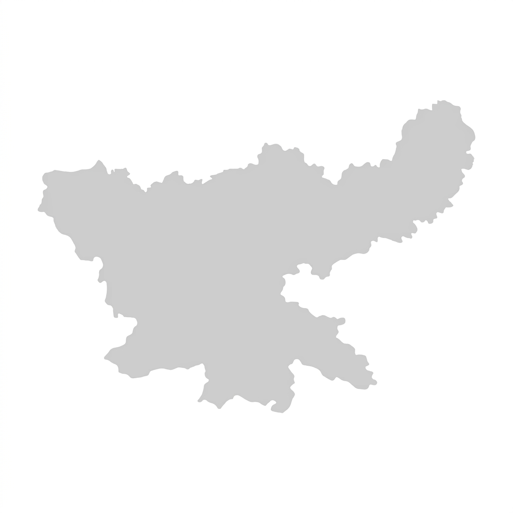

WATER QUALITY MONITORING
Water Quality
Real-time water quality data from all stations across Jharkhand.
Tue, 2 Sep 2026
10:24 AM
System Online
Avg pH
7.1
(Good)
Avg TDS
420 ppm
(Moderate)
Avg Turbidity
1.8 NTU
(Good)
Avg Temperature
25.2 °C
(Normal)
Residual Chlorine
0.4 mg/L
(Adequate)
Water Quality Status (Jharkhand)
All Districts

Palamu
Latehar
Lohardaga
Gumla
Hazaribagh
Dhanbad
Ranchi
Saraikela
Water Quality Trends (All Stations)
Last 7 Days
pH
TDS
Turbidity
Temperature
Chlorine
Water Quality Standards
| Parameter | Acceptable Range |
|---|---|
| pH | 6.5 – 8.5 |
| TDS | < 500 ppm |
| Turbidity | < 5 NTU |
| Temperature | 10 – 35 °C |
| Residual Chlorine | 0.2 – 1.0 mg/L |
Note: Ranges are general drinking water guidelines (as per BIS/WHO).
Station-wise Water Quality
All Districts
All Statuses
| # | Station / Village | District | pH | TDS (ppm) |
Turbidity (NTU) |
Temperature (°C) |
Chlorine (mg/L) |
Status | Last Update | Action |
|---|---|---|---|---|---|---|---|---|---|---|
| 1 | Jharia | Dhanbad | 7.2 | 310 | 1.2 | 24.8 | 0.5 | Good | 10:22 AM | View |
| 2 | Govindpur | Dhanbad | 7.5 | 620 | 3.1 | 25.4 | 0.3 | Caution | 10:20 AM | View |
| 3 | Baghmara | Dhanbad | 5.9 | 1500 | 12.4 | 26.1 | 0.1 | Poor | 10:15 AM | View |
| 4 | Katras | Dhanbad | 6.8 | 820 | 4.5 | 25.0 | 0.4 | Caution | 10:18 AM | View |
| 5 | Nirsa | Dhanbad | 7.1 | 320 | 1.1 | 24.9 | 0.6 | Good | 10:19 AM | View |
| 6 | Sindri | Dhanbad | 7.0 | 450 | 2.8 | 25.5 | 0.3 | Good | 10:17 AM | View |
| 7 | Topchanchi | Dhanbad | 7.4 | 280 | 0.9 | 24.7 | 0.5 | Good | 10:16 AM | View |
| 8 | Baliapur | Dhanbad | 6.1 | 980 | 6.2 | 25.8 | 0.2 | Poor | 10:14 AM | View |
Recent Water Quality Alerts
View All →High TDS detected (1500 ppm)
Baghmara – Station 03
10:15 AM
Turbidity above limit (6.2 NTU)
Katras – Station 04
09:42 AM
Low pH detected (5.9)
Sindri – Station 05
07:18 AM
Residual chlorine low (0.1 mg/L)
Lodna – Station 06
06:55 AM
Parameters back to normal
Govindpur – Station 02
06:20 AM
AI Insight
Beta
TDS levels in Dhanbad district have shown a 18% increase in the last 7 days. Recommended: Check pre-treatment filters and source variation.